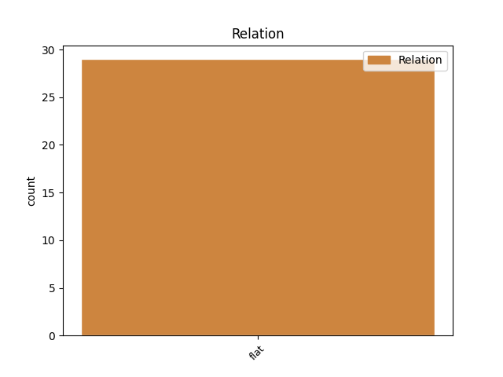
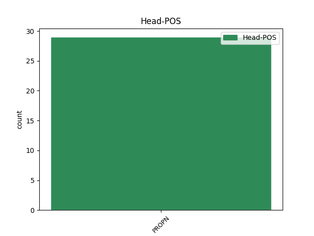
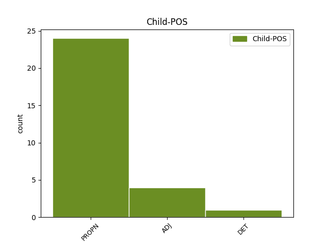

Distribution of features within this leaf



Agreement Rules sorted by frequency.
- When the dependent token is the flat multiword expression(flat) of the head token, and the head token is PROPN and the dependent token is PROPN.
1 Is _ _ _ _ 0 _ _ _
2 i _ _ _ _ 0 _ _ _
3 Vicar _ _ _ _ 0 _ _ _
4 St _ _ _ _ 0 _ _ _
5 i _ _ _ _ 0 _ _ _
6 mBaile Baile PROPN Noun Case=Gen|Form=Ecl|Gender=Masc|Number=Plur 0 _ _ _
7 Átha Átha PROPN Noun Case=Gen|Gender=Masc|Number=Sing 6 flat _ _
8 Cliath _ _ _ _ 0 _ _ _
9 a _ _ _ _ 0 _ _ _
10 bheidh _ _ _ _ 0 _ _ _
11 scoth _ _ _ _ 0 _ _ _
12 amhránaithe _ _ _ _ 0 _ _ _
13 óga _ _ _ _ 0 _ _ _
14 na _ _ _ _ 0 _ _ _
15 tíre _ _ _ _ 0 _ _ _
16 seo _ _ _ _ 0 _ _ _
17 ar _ _ _ _ 0 _ _ _
18 an _ _ _ _ 0 _ _ _
19 Satharn _ _ _ _ 0 _ _ _
20 an _ _ _ _ 0 _ _ _
21 20 _ _ _ _ 0 _ _ _
22 Aibreán _ _ _ _ 0 _ _ _
23 agus _ _ _ _ 0 _ _ _
24 iad _ _ _ _ 0 _ _ _
25 ag _ _ _ _ 0 _ _ _
26 súil _ _ _ _ 0 _ _ _
27 le _ _ _ _ 0 _ _ _
28 suim _ _ _ _ 0 _ _ _
29 na _ _ _ _ 0 _ _ _
30 gcomhlachtaí _ _ _ _ 0 _ _ _
31 ceoil _ _ _ _ 0 _ _ _
32 a _ _ _ _ 0 _ _ _
33 mhúscailt _ _ _ _ 0 _ _ _
34 . _ _ _ _ 0 _ _ _
1 Bhí _ _ _ _ 0 _ _ _
2 sí _ _ _ _ 0 _ _ _
3 ag _ _ _ _ 0 _ _ _
4 freastal _ _ _ _ 0 _ _ _
5 ar _ _ _ _ 0 _ _ _
6 Scoil _ _ _ _ 0 _ _ _
7 na _ _ _ _ 0 _ _ _
8 gCailíní _ _ _ _ 0 _ _ _
9 , _ _ _ _ 0 _ _ _
10 Doirí Doirí PROPN Noun Case=NomAcc|Gender=Masc|Number=Plur 0 _ _ _
11 Beaga beag ADJ Adj Case=NomAcc|NounType=NotSlender|Number=Plur 10 flat _ SpaceAfter=No
12 . _ _ _ _ 0 _ _ _
Disagree Examples:
1 Mar _ _ _ _ 0 _ _ _
2 is _ _ _ _ 0 _ _ _
3 léir _ _ _ _ 0 _ _ _
4 , _ _ _ _ 0 _ _ _
5 eisíodh _ _ _ _ 0 _ _ _
6 roinnt _ _ _ _ 0 _ _ _
7 mhaith _ _ _ _ 0 _ _ _
8 CallCards _ _ _ _ 0 _ _ _
9 ó _ _ _ _ 0 _ _ _
10 foilsíodh _ _ _ _ 0 _ _ _
11 an _ _ _ _ 0 _ _ _
12 bróisiúr _ _ _ _ 0 _ _ _
13 deireanach _ _ _ _ 0 _ _ _
14 do _ _ _ _ 0 _ _ _
15 Chlub _ _ _ _ 0 _ _ _
16 Bailitheoirí _ _ _ _ 0 _ _ _
17 CallCard _ _ _ _ 0 _ _ _
18 , _ _ _ _ 0 _ _ _
19 ina _ _ _ _ 0 _ _ _
20 measc _ _ _ _ 0 _ _ _
21 Garth _ _ _ _ 0 _ _ _
22 Brooks _ _ _ _ 0 _ _ _
23 , _ _ _ _ 0 _ _ _
24 Tia Tia PROPN Noun Case=NomAcc|Gender=Masc|Number=Sing 0 _ _ _
25 Maria Maria PROPN Noun Case=Gen|Gender=Fem|Number=Sing 24 flat _ _
26 agus _ _ _ _ 0 _ _ _
27 dhá _ _ _ _ 0 _ _ _
28 CallCard _ _ _ _ 0 _ _ _
29 do _ _ _ _ 0 _ _ _
30 Chorn _ _ _ _ 0 _ _ _
31 an _ _ _ _ 0 _ _ _
32 Domhain _ _ _ _ 0 _ _ _
33 1994 _ _ _ _ 0 _ _ _
34 i _ _ _ _ 0 _ _ _
35 S.A.M. _ _ _ _ 0 _ _ _
36 Mar _ _ _ _ 0 _ _ _
37 sin _ _ _ _ 0 _ _ _
38 , _ _ _ _ 0 _ _ _
39 cé _ _ _ _ 0 _ _ _
40 nár _ _ _ _ 0 _ _ _
41 tharraing _ _ _ _ 0 _ _ _
42 Teresa _ _ _ _ 0 _ _ _
43 ceangal _ _ _ _ 0 _ _ _
44 díreach _ _ _ _ 0 _ _ _
45 idir _ _ _ _ 0 _ _ _
46 an _ _ _ _ 0 _ _ _
47 teas _ _ _ _ 0 _ _ _
48 agus _ _ _ _ 0 _ _ _
49 an _ _ _ _ 0 _ _ _
50 chumha _ _ _ _ 0 _ _ _
51 , _ _ _ _ 0 _ _ _
52 úsáideann _ _ _ _ 0 _ _ _
53 sí _ _ _ _ 0 _ _ _
54 an _ _ _ _ 0 _ _ _
55 briathar _ _ _ _ 0 _ _ _
56 ' _ _ _ _ 0 _ _ _
57 fuaraigh _ _ _ _ 0 _ _ _
58 ' _ _ _ _ 0 _ _ _
59 le _ _ _ _ 0 _ _ _
60 trácht _ _ _ _ 0 _ _ _
61 ar _ _ _ _ 0 _ _ _
62 chumha _ _ _ _ 0 _ _ _
63 a _ _ _ _ 0 _ _ _
64 bheadh _ _ _ _ 0 _ _ _
65 ag _ _ _ _ 0 _ _ _
66 trá _ _ _ _ 0 _ _ _
67 de _ _ _ _ 0 _ _ _
68 réir _ _ _ _ 0 _ _ _
69 a _ _ _ _ 0 _ _ _
70 chéile _ _ _ _ 0 _ _ _
71 , _ _ _ _ 0 _ _ _
72 i _ _ _ _ 0 _ _ _
73 ndiaidh _ _ _ _ 0 _ _ _
74 duine _ _ _ _ 0 _ _ _
75 a _ _ _ _ 0 _ _ _
76 gheobhadh _ _ _ _ 0 _ _ _
77 bás _ _ _ _ 0 _ _ _
78 . _ _ _ _ 0 _ _ _
1 Tá _ _ _ _ 0 _ _ _
2 an _ _ _ _ 0 _ _ _
3 teach _ _ _ _ 0 _ _ _
4 a _ _ _ _ 0 _ _ _
5 bhí _ _ _ _ 0 _ _ _
6 ag _ _ _ _ 0 _ _ _
7 an _ _ _ _ 0 _ _ _
8 mhinistéir _ _ _ _ 0 _ _ _
9 ansin _ _ _ _ 0 _ _ _
10 , _ _ _ _ 0 _ _ _
11 ' _ _ _ _ 0 _ _ _
12 An _ _ _ _ 0 _ _ _
13 Lios _ _ _ _ 0 _ _ _
14 ' _ _ _ _ 0 _ _ _
15 , _ _ _ _ 0 _ _ _
16 an _ _ _ _ 0 _ _ _
17 teach _ _ _ _ 0 _ _ _
18 inar _ _ _ _ 0 _ _ _
19 thug _ _ _ _ 0 _ _ _
20 Dúbhglas _ _ _ _ 0 _ _ _
21 de _ _ _ _ 0 _ _ _
22 h-Íde _ _ _ _ 0 _ _ _
23 an _ _ _ _ 0 _ _ _
24 chuid _ _ _ _ 0 _ _ _
25 ba _ _ _ _ 0 _ _ _
26 mhó _ _ _ _ 0 _ _ _
27 dá _ _ _ _ 0 _ _ _
28 óige _ _ _ _ 0 _ _ _
29 , _ _ _ _ 0 _ _ _
30 ina _ _ _ _ 0 _ _ _
31 sheasamh _ _ _ _ 0 _ _ _
32 fós _ _ _ _ 0 _ _ _
33 , _ _ _ _ 0 _ _ _
34 timpeall _ _ _ _ 0 _ _ _
35 céad _ _ _ _ 0 _ _ _
36 slat _ _ _ _ 0 _ _ _
37 isteach _ _ _ _ 0 _ _ _
38 ón _ _ _ _ 0 _ _ _
39 bhóthar _ _ _ _ 0 _ _ _
40 idir _ _ _ _ 0 _ _ _
41 Dún _ _ _ _ 0 _ _ _
42 Gar _ _ _ _ 0 _ _ _
43 agus _ _ _ _ 0 _ _ _
44 Bealach _ _ _ _ 0 _ _ _
45 an _ _ _ _ 0 _ _ _
46 Doirín _ _ _ _ 0 _ _ _
47 agus _ _ _ _ 0 _ _ _
48 ceathrú _ _ _ _ 0 _ _ _
49 mhíle _ _ _ _ 0 _ _ _
50 ó _ _ _ _ 0 _ _ _
51 shéipéal _ _ _ _ 0 _ _ _
52 Eaglais Eaglais PROPN Noun Case=NomAcc|Gender=Fem|Number=Sing 0 _ _ _
53 na na DET Art Case=Gen|Definite=Def|Gender=Fem|Number=Sing|PronType=Art 52 flat _ _
54 hÉireann _ _ _ _ 0 _ _ _
55 a _ _ _ _ 0 _ _ _
56 raibh _ _ _ _ 0 _ _ _
57 athair _ _ _ _ 0 _ _ _
58 Dhúbhglais _ _ _ _ 0 _ _ _
59 chun _ _ _ _ 0 _ _ _
60 a _ _ _ _ 0 _ _ _
61 bheith _ _ _ _ 0 _ _ _
62 ina _ _ _ _ 0 _ _ _
63 reachtaire _ _ _ _ 0 _ _ _
64 ann _ _ _ _ 0 _ _ _
65 ar _ _ _ _ 0 _ _ _
66 an _ _ _ _ 0 _ _ _
67 Phortach _ _ _ _ 0 _ _ _
68 Ard _ _ _ _ 0 _ _ _
69 . _ _ _ _ 0 _ _ _
1 Tá _ _ _ _ 0 _ _ _
2 an _ _ _ _ 0 _ _ _
3 teach _ _ _ _ 0 _ _ _
4 a _ _ _ _ 0 _ _ _
5 bhí _ _ _ _ 0 _ _ _
6 ag _ _ _ _ 0 _ _ _
7 an _ _ _ _ 0 _ _ _
8 mhinistéir _ _ _ _ 0 _ _ _
9 ansin _ _ _ _ 0 _ _ _
10 , _ _ _ _ 0 _ _ _
11 ' _ _ _ _ 0 _ _ _
12 An _ _ _ _ 0 _ _ _
13 Lios _ _ _ _ 0 _ _ _
14 ' _ _ _ _ 0 _ _ _
15 , _ _ _ _ 0 _ _ _
16 an _ _ _ _ 0 _ _ _
17 teach _ _ _ _ 0 _ _ _
18 inar _ _ _ _ 0 _ _ _
19 thug _ _ _ _ 0 _ _ _
20 Dúbhglas _ _ _ _ 0 _ _ _
21 de _ _ _ _ 0 _ _ _
22 h-Íde _ _ _ _ 0 _ _ _
23 an _ _ _ _ 0 _ _ _
24 chuid _ _ _ _ 0 _ _ _
25 ba _ _ _ _ 0 _ _ _
26 mhó _ _ _ _ 0 _ _ _
27 dá _ _ _ _ 0 _ _ _
28 óige _ _ _ _ 0 _ _ _
29 , _ _ _ _ 0 _ _ _
30 ina _ _ _ _ 0 _ _ _
31 sheasamh _ _ _ _ 0 _ _ _
32 fós _ _ _ _ 0 _ _ _
33 , _ _ _ _ 0 _ _ _
34 timpeall _ _ _ _ 0 _ _ _
35 céad _ _ _ _ 0 _ _ _
36 slat _ _ _ _ 0 _ _ _
37 isteach _ _ _ _ 0 _ _ _
38 ón _ _ _ _ 0 _ _ _
39 bhóthar _ _ _ _ 0 _ _ _
40 idir _ _ _ _ 0 _ _ _
41 Dún _ _ _ _ 0 _ _ _
42 Gar _ _ _ _ 0 _ _ _
43 agus _ _ _ _ 0 _ _ _
44 Bealach _ _ _ _ 0 _ _ _
45 an _ _ _ _ 0 _ _ _
46 Doirín _ _ _ _ 0 _ _ _
47 agus _ _ _ _ 0 _ _ _
48 ceathrú _ _ _ _ 0 _ _ _
49 mhíle _ _ _ _ 0 _ _ _
50 ó _ _ _ _ 0 _ _ _
51 shéipéal _ _ _ _ 0 _ _ _
52 Eaglais Eaglais PROPN Noun Case=NomAcc|Gender=Fem|Number=Sing 0 _ _ _
53 na _ _ _ _ 0 _ _ _
54 hÉireann Éire PROPN Noun Case=Gen|Definite=Def|Gender=Fem|Number=Sing 52 flat _ _
55 a _ _ _ _ 0 _ _ _
56 raibh _ _ _ _ 0 _ _ _
57 athair _ _ _ _ 0 _ _ _
58 Dhúbhglais _ _ _ _ 0 _ _ _
59 chun _ _ _ _ 0 _ _ _
60 a _ _ _ _ 0 _ _ _
61 bheith _ _ _ _ 0 _ _ _
62 ina _ _ _ _ 0 _ _ _
63 reachtaire _ _ _ _ 0 _ _ _
64 ann _ _ _ _ 0 _ _ _
65 ar _ _ _ _ 0 _ _ _
66 an _ _ _ _ 0 _ _ _
67 Phortach _ _ _ _ 0 _ _ _
68 Ard _ _ _ _ 0 _ _ _
69 . _ _ _ _ 0 _ _ _
1 Cuireann _ _ _ _ 0 _ _ _
2 Paul _ _ _ _ 0 _ _ _
3 Ó _ _ _ _ 0 _ _ _
4 Braoin _ _ _ _ 0 _ _ _
5 as _ _ _ _ 0 _ _ _
6 Baile Baile PROPN Noun Case=NomAcc|Gender=Masc|Number=Sing 0 _ _ _
7 Átha Átha PROPN Noun Case=Gen|Form=Len|Gender=Masc|Number=Sing 6 flat _ _
8 Luain _ _ _ _ 0 _ _ _
9 an _ _ _ _ 0 _ _ _
10 píosa _ _ _ _ 0 _ _ _
11 seo _ _ _ _ 0 _ _ _
12 chugainn _ _ _ _ 0 _ _ _
13 , _ _ _ _ 0 _ _ _
14 ar _ _ _ _ 0 _ _ _
15 aistriúchán _ _ _ _ 0 _ _ _
16 é _ _ _ _ 0 _ _ _
17 ar _ _ _ _ 0 _ _ _
18 alt _ _ _ _ 0 _ _ _
19 a _ _ _ _ 0 _ _ _
20 foilsíodh _ _ _ _ 0 _ _ _
21 in _ _ _ _ 0 _ _ _
22 eagrán _ _ _ _ 0 _ _ _
23 Aibreáin _ _ _ _ 0 _ _ _
24 den _ _ _ _ 0 _ _ _
25 iris _ _ _ _ 0 _ _ _
26 Irish _ _ _ _ 0 _ _ _
27 Computer _ _ _ _ 0 _ _ _
28 agus _ _ _ _ 0 _ _ _
29 a _ _ _ _ 0 _ _ _
30 athfoilsítear _ _ _ _ 0 _ _ _
31 anseo _ _ _ _ 0 _ _ _
32 le _ _ _ _ 0 _ _ _
33 caoin-chead _ _ _ _ 0 _ _ _
34 eagarthóra _ _ _ _ 0 _ _ _
35 na _ _ _ _ 0 _ _ _
36 hirise _ _ _ _ 0 _ _ _
37 sin _ _ _ _ 0 _ _ _
38 , _ _ _ _ 0 _ _ _
39 Declan _ _ _ _ 0 _ _ _
40 McColgan _ _ _ _ 0 _ _ _
41 . _ _ _ _ 0 _ _ _
1 Ní _ _ _ _ 0 _ _ _
2 mór _ _ _ _ 0 _ _ _
3 4 _ _ _ _ 0 _ _ _
4 chóip _ _ _ _ 0 _ _ _
5 den _ _ _ _ 0 _ _ _
6 ghearrscéal _ _ _ _ 0 _ _ _
7 a _ _ _ _ 0 _ _ _
8 sheoladh _ _ _ _ 0 _ _ _
9 roimh _ _ _ _ 0 _ _ _
10 1 _ _ _ _ 0 _ _ _
11 Feabhra _ _ _ _ 0 _ _ _
12 1997 _ _ _ _ 0 _ _ _
13 go _ _ _ _ 0 _ _ _
14 dtí _ _ _ _ 0 _ _ _
15 : _ _ _ _ 0 _ _ _
16 ' _ _ _ _ 0 _ _ _
17 Ceiliúradh _ _ _ _ 0 _ _ _
18 an _ _ _ _ 0 _ _ _
19 Bhlascaoid _ _ _ _ 0 _ _ _
20 ' _ _ _ _ 0 _ _ _
21 , _ _ _ _ 0 _ _ _
22 An _ _ _ _ 0 _ _ _
23 Bainisteoir _ _ _ _ 0 _ _ _
24 , _ _ _ _ 0 _ _ _
25 Ionad _ _ _ _ 0 _ _ _
26 an _ _ _ _ 0 _ _ _
27 Bhlascaoid Bhlascaoid PROPN Noun Case=NomAcc|Gender=Masc|Number=Sing 0 _ _ _
28 Mhóir mór ADJ Adj Case=Gen|Gender=Masc|Number=Sing 27 flat _ SpaceAfter=No
29 , _ _ _ _ 0 _ _ _
30 Dún _ _ _ _ 0 _ _ _
31 Chaoin _ _ _ _ 0 _ _ _
32 , _ _ _ _ 0 _ _ _
33 Trá _ _ _ _ 0 _ _ _
34 Lí _ _ _ _ 0 _ _ _
35 , _ _ _ _ 0 _ _ _
36 Co. _ _ _ _ 0 _ _ _
37 Chiarraí _ _ _ _ 0 _ _ _
38 . _ _ _ _ 0 _ _ _